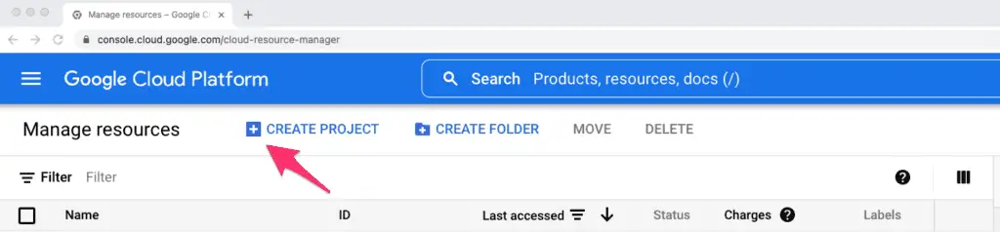
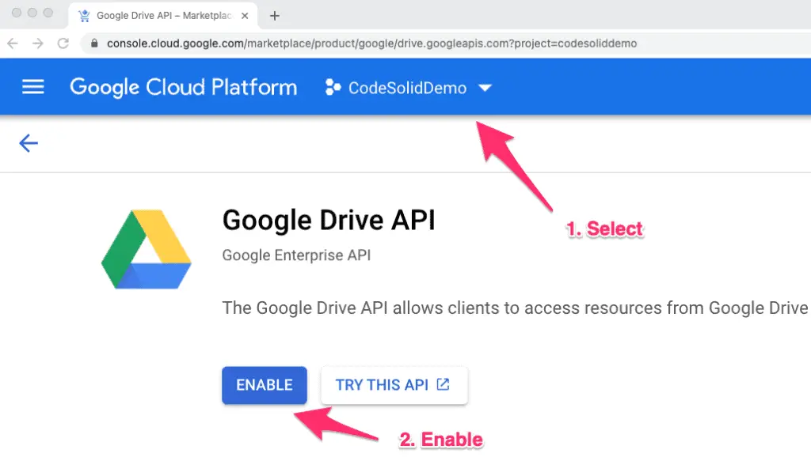
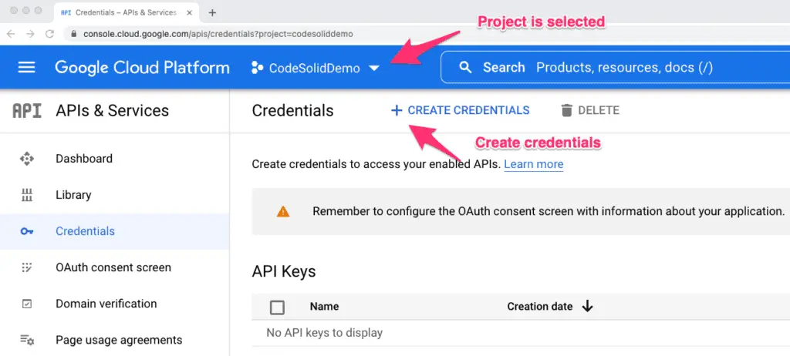
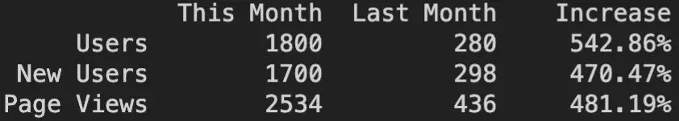
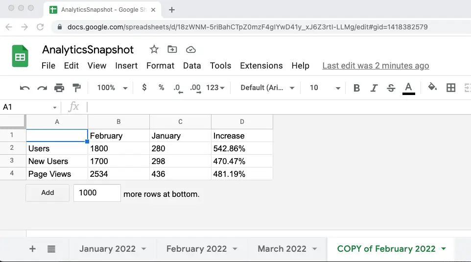
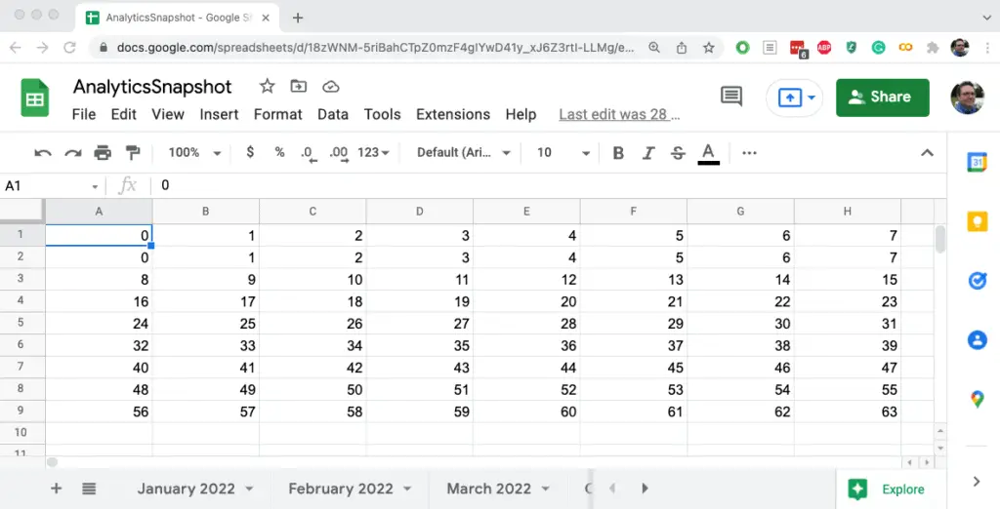

How to Work With Google Sheets In Python and Pandas
Working with spreadsheets in Python on your local machine is relatively simple. For example, Pandas can open a spreadsheet into a DataFrame using read_excel. To do this, Pandas relies on another package for reading and writing spreadsheets, openpyxl. Once you’ve installed this package using your favorite package manager, the process is straightforward.
To the extent that you can download a spreadsheet from Google Sheets into a local xlxs file, working with Google spreadsheets is also straightforward. However, often what’s needed is to read or update Google Sheets directly from Python.
Some packages can do this task. The “gspread” package handles read-write connections to Google spreadsheets, and an additional package, gspread_dataframe, allows us to integrate the worksheets returned from gspread with a Pandas DataFrame. However, the gspread package requires a fair amount of setup, and not many comprehensive examples show how to do the configuration and integrate the two packages.
This article will fill this gap. We build on the gspread documentation to walk you through enabling a connection to a Google Sheet step by step – we even provide a spreadsheet you can upload to Google Sheets to get you started. Once we have gspread configured and working, which we’ll test out in some small sample programs, we’ll move on to integrate our spreadsheet with Pandas using the second package, gspread_dataframe.
Ready for all that fun? You got this! Let’s dive right in:
The Devil is Not in the Details, It’s In the Setup.
Some programming tasks are complex not because they’re hard in themselves but because getting ready to do them is hard. SQL is like that, for example. SELECT * FROM employees; – wow, that was easy, but oh, I have to install something and connect to it first, don’t I?
In the case of using Google Sheets directly in Python, one of the best-supported approaches is to use the gspread package, but there are some setup steps and dependencies you need before you can take advantage of this package.
Of course, since we’re using this third-party package, an easy first step before we configure everything is to install that package. With a virtual environment selected, for example:
pip install gspread
Welcome to the Google Cloud
The biggest hurdle is that, to get this to work, you’ll need a Google Cloud account. If you already have one, great. The tasks in this article shouldn’t cost you anything to do since all we’ll be doing is setting up a project and permissions you can apply to the spreadsheet.
If you don’t have one, you’ll need to set on up, and Google will also throw in [\(300 in free usage credits](https://cloud.google.com/free/) in the hope of making you a loyal Google fanboy someday. (Fan-person, sorry). Again, you shouldn't need any of those \)300 in usage credits for this article, so after you’ve had your fill of this article, you can go and have fun setting up a Kubernetes cluster or something.
I’m not going to walk you through setting up a Google Cloud account if you don’t have one. But if you have one already or create one, I’ll walk you through the rest of the steps.
The steps below are a more detailed and visual version of the spread Google Spreadsheets Authentication instructions. We’ll work through the steps in detail and finish by referring to those instructions again.
Configuring a Project
If you have a Google Cloud account already, you probably know that, unlike AWS, Google Cloud organizes cloud resources and permissions in the context of a project. For purposes of this tutorial, we’re going to create a new project and go through the steps of enabling a Google Sheets service account together. Still, you could easily apply these steps to a pre-existing project, too.
To create a project, visit the Google Cloud resource manager page. Here click on the Create Project link:

Give your project a name. If it’s your personal account, you don’t need to associate it with an organization.
In a few seconds, you’ll have a new project.
Creating a Service Account
Next, In the “Search Products, resources, docs” field above where you created the project, enter Google Drive API, which will bring you to a page for that. Odds are your new project won’t be selected on that page, so first, select it, then enable the Google Drive API for that project.

This step will bring you to the Google Drive API page, which will search the Google Cloud Search field again, so repeat this process by searching for Google Sheets API. Again, make sure your project is selected and enable Google Sheets API.
Again using the GCP search bar, search for APIs and Services, and click on the link when it comes up. Make sure your project is selected and click “Create Credentials”:

Select Service Account from the dropdown you see when you click “Create Credentials.” Give it a descriptive name, like “GoogleSheetsAccess.” You can optionally give it a description, like “Edit my Quidditch Scores.” (Alright, maybe I shouldn’t tell you how to name stuff). Anyway, at this point, click Create and Continue.
Following this, you’ll probably see two optional steps, “Grant this service account access to project” and “Grant users access to this service account.” If you’re doing this on a personal account without other users, you can skip both steps. Otherwise, you will want to grant access to users who need to access spreadsheets on your account.
Adding a Key
While still in the API and Services Page, you should now see your new account in the “Service Accounts” section toward the bottom of the screen. Click it to make it active, then click KEYS, then in the Keys window, click “ADD KEY,” then “Create New Key,” select JSON format, and click CREATE.
This step will download your JSON file with the credentials you’ll need to your computer, wherever you usually download files. You’ll see a message that you should store it securely. Of course, this is a best practice for all such credentials files.
Configure Your Spreadsheet and Gspread to Use The New Credentials
At this point, you need to do three essential things:
Move the downloaded JSON FILE to a place where gspread can find it. From the documentation: “Move the downloaded file to
~/.config/gspread/service_account.json. Windows users should put this file to%APPDATA%\gspread\service_account.json.”IMPORTANT: Open the JSON file in a text editor to get the email address, and copy it to the clipboard. Now go to the Google Sheet you want to access, click the Share button, and paste that email to the list of users you’re sharing the spreadsheet with. By default it should give the service account “Editor Permissions”. That’s what you want, especially if you’re allowing writes as well as reads.
If you want to try out the code below, it works with a spreadsheet I created, which you’re welcome to grab and upload to Google Sheets. Download it here. We’ll get the whole sheet for February and print it out:
import gspread
import pprint as pp
gc = gspread.service_account()
sh = gc.open("AnalyticsSnapshot")
s_range = sh.worksheet("February 2022").get("A1:D4")
pp.pprint(s_range)
Output:
[['', 'This Month', 'Last Month', 'Increase'],
['Users', '1800', '280', '542.86%'],
['New Users', '1700', '298', '470.47%'],
['Page Views', '2534', '436', '481.19%']]
As it stands, that output is none too pretty. We can clean it up a bit this way, but it requires knowledge of the column widths:
for row in s_range:
for col in row:
print(str(col).rjust(12), end="")
print("")
Output:

Writing Data
In addition to reading existing data, we can also write to cells or whole new worksheet pages. Let’s copy our existing data and modify the header names to demonstrate this.
Here’s the code we would use for something like that.
import gspread
import pprint as pp
# Get the spreadsheet and the February worksheet as before.
gc = gspread.service_account()
sh = gc.open("AnalyticsSnapshot")
s_range = sh.worksheet("February 2022").get("A1:D4")
# Copy the range to unlink it to the worksheet it came from
range_copy = s_range.copy()
# Create a copy of the worksheet with a new name
new_worksheet = sh.add_worksheet(title="COPY of February 2022",
rows=len(s_range), cols=len(s_range[0]))
# Copy the existing data
new_worksheet.update("A1:D4", range_copy)
# Update two column header labels
new_worksheet.update("B1", "February")
new_worksheet.update("C1", "January")
Note that as written, this is non-re-entrant because the “add_worksheet” call will throw an exception if the worksheet exists. We’ll show a way to fix this in our next section, but it’s okay for the current demo.
Here’s how that worksheet page looks after running this code:

Using Google Sheets With Pandas
Now that we’ve gone through the steps to configure gspread and demonstrate some basic functionality, it won’t take too much effort to see how this integrates with Pandas. For this, we’ll be working with the gspread-dataframe package, and we should also grab Pandas and NumPy while we’re at it.
pip install gspread-dataframe pandas numpy
To test things out, we’ll use our same AnalyticsSnapshot spreadsheet and create a new worksheet in it. This time we’ll try reading the worksheet, and if we catch an exception as we expect the first time through, we’ll create it. Catching the exception this way fixes the issue we identified earlier.
Once we have a worksheet to work with, we’ll write an example DataFrame, then read back a section into a new DataFrame.
The code below shows how it looks when we’re done, or if you prefer, here is the notebook source.
import pandas as pd
import numpy as np
import gspread
from gspread_dataframe import get_as_dataframe, set_with_dataframe
# Open an existing spreadsheet
gc = gspread.service_account()
sh = gc.open("AnalyticsSnapshot")
# Read a worksheet and create it if it doesn't exist
worksheet_title = "Pandas Demo"
try:
worksheet = sh.worksheet(worksheet_title)
except gspread.WorksheetNotFound:
worksheet = sh.add_worksheet(title=worksheet_title, rows=1000, cols=1000)
# Write a test DataFrame to the worksheet
df_test = pd.DataFrame(np.arange(64).reshape(8,8))
set_with_dataframe(worksheet, df_test)
# Get some columns back out
df_read = get_as_dataframe(worksheet, usecols=[0,1,2], nrows=8, header=None, skiprows=1)
# Display the columns
df_read
The output will show the first three columns of data (minus the header row that got saved). Here’s how it looks on the sheet itself.

To suppress the header row when saving the DataFrame, change the set_with_dataframe line to this:
set_with_dataframe(worksheet, df_test, include_column_header=False)
If you make this change, you’ll also need to set the skiprows value to zero when you read the DataFrame back.
Closing Thoughts
The Python packages for dealing with Google Sheets either directly or in Pandas both work well enough, and neither gave me any trouble. However, working with Google Sheets directly like this was reasonably involved, so it might not make sense for truly casual use.
A good case for modifying an existing SpreadSheet as a Google sheet would be where the sheet needs to be shared with other users. Otherwise, it might be easier to work with the spreadsheet directly in Pandas.
As more and more of us rely on Google’s “office apps in the cloud,” however, perhaps this closing advice is pretty moot, though. Once you’ve set up your Google project and service account, it’s not that onerous to add your service account to any Google Sheet you access in Python.